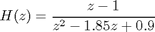
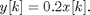
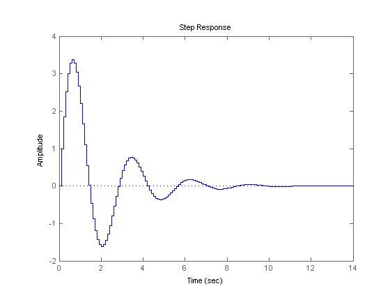
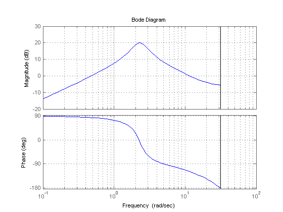

Creating Discrete-Time Models
This demo shows how to create discrete-time linear models using the tf, zpk, ss, and frd commands.
Contents
Specifying Discrete-Time Models
Control System Toolbox™ lets you create both continuous-time and discrete-time models. The syntax for creating discrete-time models is similar to that for continuous-time models, except that you must also provide a sampling time (sampling interval in seconds).
For example, to specify the discrete-time transfer function:

with sampling period Ts = 0.1 s, type:
num = [ 1 -1 ]; den = [ 1 -1.85 0.9 ]; H = tf(num,den,0.1)
Transfer function:
z - 1
------------------
z^2 - 1.85 z + 0.9
Sampling time: 0.1
or equivalently:
z = tf('z',0.1);
H = (z - 1) / (z^2 - 1.85*z + 0.9);
Similarly, to specify the discrete-time state-space model:
![$$ x[k+1] = 0.5 x[k] + u[k] $$](GSCreatingModelsDT_eq97605.png)

with sampling period Ts = 0.1 s, type:
sys = ss(.5,1,.2,0,0.1);
Recognizing Discrete-Time Systems
There are several ways to determine if your LTI model is discrete:
- The display shows a nonzero sampling time value
- sys.Ts or get(sys,'Ts') return a nonzero sampling time value.
- isdt(sys) returns true.
For example, for the transfer function H specified above,
H.Ts
ans =
0.1000
isdt(H)
ans =
1
You can also spot discrete-time systems by looking for the following traits:
- Time response plots - Response curve has a staircase look owing to its sampled-data nature
- Bode plots - There is a vertical bar marking the Nyquist frequency (pi divided by the sampling time).
The following plots show these characteristic traits:
step(H)
bode(H), grid